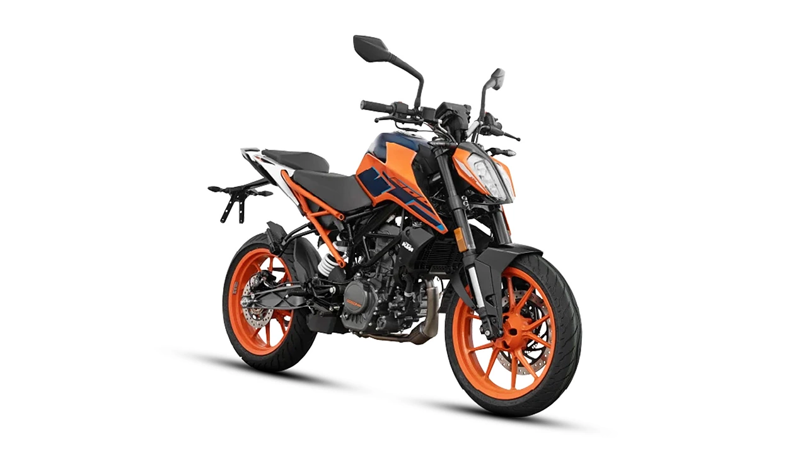
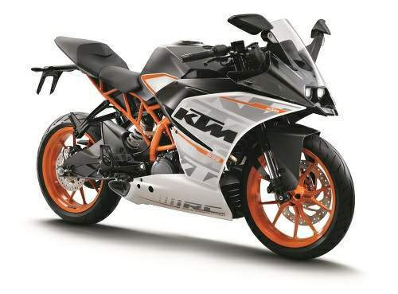
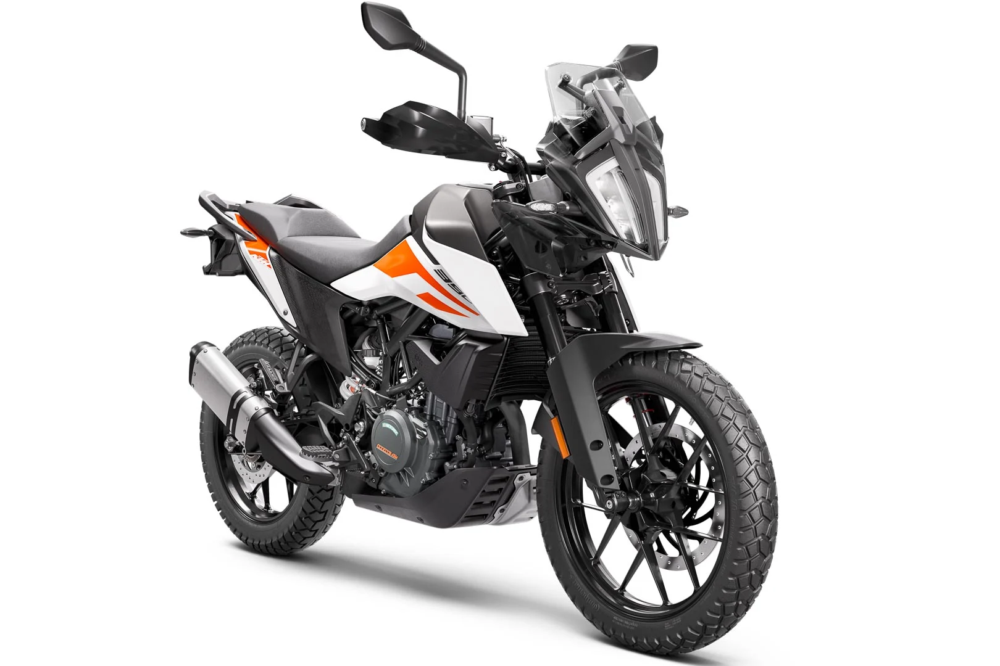

In 1934, an Austrian engineer Johann (Hans) Trunkenpolz (1909–1962)[4] set up a fitter's and car repair shop[5] in Mattighofen. In 1937, he started selling DKW motorcycles, and Opel cars the following year. His shop was known as Kraftfahrzeug Trunkenpolz Mattighofen, but the name was unregistered. During the Second World War, his wife took care of the business which was thriving mainly on account of diesel engine repairs.[6]
KTM is an Austrian motorcycle, bicycle and motorsports brand which is co-owned by Indian manufacturer Bajaj Auto and Austrian manufacturer Pierer Mobility AG. It traces its foundation to 1934 as Kronreif & Trunkenpolz Mattighofen. Today, Pierer Mobility AG operates as the manufacturer of KTM branded motorcycles, and KTM Fahrrad AG operates as the manufacturer of KTM branded bicycles.
 |
KTM DukeThe KTM Duke is a popular series of naked street motorcycles manufactured by the Austrian company KTM. Known for their sharp design, lightweight construction, and high-performance engines, KTM Duke bikes are designed to provide an exhilarating riding experience, whether for urban commuting, spirited road trips, or track-inspired adventures. |
KTM RCThe KTM RC is a series of fully faired, high-performance sports motorcycles manufactured by KTM, an Austrian company known for its innovative and race-inspired designs. The RC series is built for riders who crave an aggressive riding experience, whether on the road or the track, combining sharp aesthetics with cutting-edge performance. |
 |
 |
KTM AdventureThe KTM Adventure is a series of dual-sport motorcycles designed for riders who seek adventure both on and off-road. Manufactured by KTM, an Austrian company known for its performance-oriented motorcycles, the Adventure series is engineered to tackle rugged terrain, long-distance touring, and daily commuting with ease. |
 Instagram
Instagram Facebook
Facebook YouTube
YouTube Twitter
Twitter